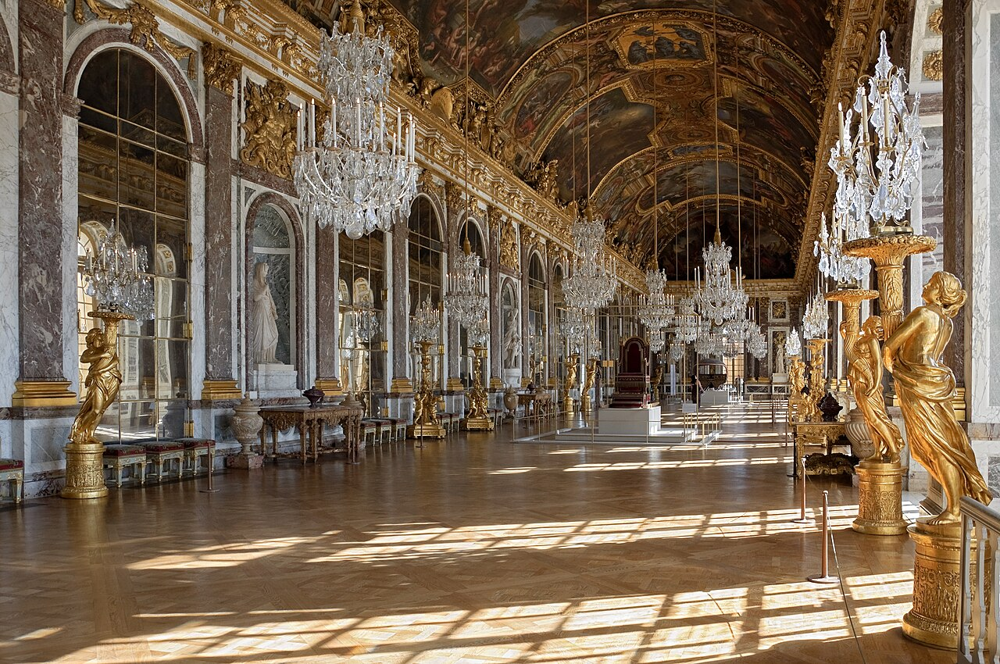

Vous habitez Versailles ou dans les Yvelines (78) et vous cherchez un professeur d'échecs particulier ? Que vous soyez parent d'un enfant curieux, adolescent motivé ou adulte débutant, vous êtes au bon endroit.
Je suis Nicolas Musicki, passionné d'échecs depuis l'enfance et professeur depuis 3 ans. Je propose des cours d'échecs à domicile dans tout Versailles et, selon le temps de trajet, à Paris et dans les communes voisines. Ma méthode : une pédagogie adaptée à chaque profil, ludique pour les enfants, structurée pour les adultes, et toujours orientée vers le plaisir du jeu.
Le premier cours est offert et sans engagement. L'occasion idéale de découvrir les échecs ou de relancer votre progression avec un accompagnement sur mesure.

1. Pourquoi prendre des cours d'échecs à Versailles ?
Versailles est une ville où la culture, l'histoire et la stratégie se croisent naturellement. Avec son patrimoine exceptionnel et sa vie intellectuelle riche, c'est un terrain idéal pour s'initier ou se perfectionner aux échecs.
Une ville de culture et de stratégie
La cité royale a toujours été un lieu de réflexion stratégique. Des négociations diplomatiques du Château de Versailles aux cercles intellectuels de la ville, l'art de la stratégie fait partie de l'ADN versaillais. Les échecs s'inscrivent parfaitement dans cette tradition.
Proximité avec Paris, sans le stress
À seulement 30 minutes de Paris, Versailles offre un cadre de vie plus paisible. Fini les trajets interminables pour rejoindre un club d'échecs parisien : votre professeur se déplace directement chez vous. Les cours se déroulent dans le confort de votre domicile, sans stress de transport.
Les échecs : un investissement pour toute la famille
Prendre des cours d'échecs à Versailles, c'est investir dans :
- La concentration : les échecs entraînent le cerveau à se focaliser sur une tâche complexe
- La patience et la réflexion : chaque coup demande d'anticiper les conséquences
- La confiance en soi : progresser aux échecs renforce l'estime personnelle
- Le lien social : un hobby partageable en famille ou entre amis
2. Pour qui sont ces cours ?
Mes cours d'échecs à Versailles s'adressent à tous les profils et tous les niveaux. Voici comment je m'adapte à chaque public.
Enfants dès 5 ans : une approche ludique
Les échecs pour les enfants
L'apprentissage des échecs chez les jeunes enfants est un formidable outil de développement cognitif. Mémoire, logique, créativité : les bénéfices sont prouvés par de nombreuses études scientifiques.
Ma méthode pour les enfants est avant tout ludique. J'utilise des histoires, des mini-jeux et des défis progressifs pour captiver leur attention. L'objectif : qu'ils associent les échecs au plaisir, pas à la contrainte.
Pour aller plus loin : Découvrez tous les bienfaits des échecs pour les enfants.
Adolescents : concentration et compétition
Les échecs pour les adolescents
Les échecs sont un excellent complément à la scolarité. Ils développent la concentration, la gestion du stress et la capacité d'analyse : des compétences directement transférables aux études.
Pour les ados motivés, je propose aussi une préparation aux compétitions : tournois scolaires, championnats départementaux des Yvelines, et même championnats de France jeunes.
Adultes débutants ou confirmés
Les échecs pour les adultes
Il n'est jamais trop tard pour commencer les échecs. Que vous n'ayez jamais touché un échiquier ou que vous souhaitiez dépasser un palier, mes cours s'adaptent à votre niveau et à vos objectifs.
Beaucoup de mes élèves adultes à Versailles ont débuté après 30, 40 ou même 50 ans. La question n'est pas l'âge, mais la méthode.
Pour aller plus loin : Faut-il un professeur ou peut-on apprendre seul ?
3. Comment se déroulent les cours à Versailles ?
La simplicité est au coeur de mon approche. Pas de déplacement pour vous : c'est moi qui viens à vous.
Cours à domicile : le confort avant tout
Je me déplace directement chez vous à Versailles et dans les communes environnantes des Yvelines. Votre salon, votre bureau, votre jardin en été : le cours se déroule là où vous êtes le plus à l'aise.
Ce que j'apporte à chaque cours
Échiquier et pièces : Matériel professionnel fourni, vous n'avez rien à acheter
Supports pédagogiques : Fiches de tactique, exercices personnalisés, positions à étudier
Analyse sur ordinateur : Pour les élèves intermédiaires et avancés, analyse des parties avec moteur
Cours en visio : l'alternative flexible
Pas disponible pour un cours en présentiel ? Je propose aussi des cours d'échecs en visioconférence à 40 €/h, partout en France et dans le monde. Via un écran partagé sur Lichess ou Chess.com, nous travaillons exactement comme en face à face.
Idéal pour : les semaines chargées, les vacances, ou si vous habitez une commune éloignée des Yvelines.
Durée et rythme
- Durée d'un cours : 1 heure
- Rythme recommandé : 1 cours par semaine pour une progression régulière
- Flexibilité totale : horaires adaptés à votre emploi du temps (soirs, mercredis, week-ends)
- Aucun engagement : vous pouvez arrêter ou faire une pause à tout moment
4. La méthode Nicolas Musicki
Après 3 ans d'enseignement et une vingtaine d'élèves accompagnés à Paris et Versailles, j'ai développé une méthode qui s'adapte à chaque profil. Voici les grands principes.
Pour les enfants : apprendre en s'amusant
Mini-jeux et défis
Chaque cours commence par un défi tactique adapté au niveau de l'enfant. Les pièces deviennent des personnages, l'échiquier un terrain d'aventure.
Progression par paliers
Je suis un programme structuré qui va des règles de base aux premières combinaisons tactiques. Chaque palier franchi est célébré pour maintenir la motivation.
Pour les adultes : une progression structurée
Analyse de vos parties
On part de VOS parties en ligne ou en tournoi. J'identifie vos forces, vos faiblesses, et on travaille dessus concrètement. Pas de théorie abstraite : du concret.
Tactique, stratégie, finales
Un programme équilibré entre les trois piliers des échecs. Exercices de tactique pour le calcul, plans stratégiques pour la compréhension, finales pour la technique.
Préparation aux tournois
Pour les élèves qui souhaitent participer à des compétitions dans les Yvelines ou en Île-de-France, je propose un accompagnement spécifique :
- Préparation d'ouvertures adaptées à votre style de jeu
- Travail mental : gestion du temps, du stress et de la concentration en compétition
- Analyse post-tournoi : débriefing de chaque partie pour progresser rapidement
- Simulation de parties avec pendule pour s'habituer aux conditions réelles
5. Versailles et les zones accessibles à domicile
Je me déplace dans tout Versailles. Pour les autres communes et Paris, la règle est simple : le trajet jusqu'au domicile doit rester inférieur ou égal à environ une heure. La distance en kilomètres n'est donc pas le bon indicateur lorsqu'une ville est bien desservie.
Versailles et environs proches
- Versailles centre (tous quartiers)
- Le Chesnay-Rocquencourt
- Viroflay
- Vélizy-Villacoublay
- Buc, Jouy-en-Josas
Ouest et nord de Versailles
- Saint-Germain-en-Laye
- Bougival, Louveciennes
- La Celle-Saint-Cloud
- Marly-le-Roi, Noisy-le-Roi
- Bailly, Saint-Cyr-l'École
Axes bien desservis
- Paris selon l'arrondissement et l'horaire
- Chaville et Sèvres
- Saint-Cloud et communes voisines
- Autres villes reliées directement à Versailles
- Validation selon le trajet réel
Comment je confirme
- Votre adresse ou votre quartier
- Le jour et l'heure souhaités
- Un trajet d'environ une heure maximum
- Visio possible si le trajet est trop long
Votre commune n'est pas dans la liste ?
Envoyez-moi votre adresse ou votre quartier. Consultez aussi la page complète des cours à domicile à Paris, Versailles et alentours. Je vérifie le temps de trajet au créneau demandé et je vous confirme la possibilité de déplacement. Si le trajet dépasse environ une heure, les cours en visio à 40 €/h restent disponibles.
Matéo, élève à Versailles depuis un an
Matéo suit des cours réguliers depuis un an et se dit très satisfait des cours et de l'accompagnement proposé. Ce suivi dans la durée permet d'adapter le programme à ses progrès et à ses parties.
6. Tarifs des cours d'échecs à Versailles
Des tarifs clairs, sans surprise. Et un premier cours offert pour que vous puissiez tester sans risque.
1er cours OFFERT et sans engagement
Votre premier cours est entièrement gratuit. C'est l'occasion de faire connaissance, d'évaluer votre niveau et de définir ensemble vos objectifs. Si ça vous convient, on continue. Sinon, vous ne devez rien.
| Formule | Tarif | Détails |
|---|---|---|
| Cours à domicile | 50 €/h | 1 élève, à votre domicile à Versailles ou dans une zone dont le trajet a été validé. Progression personnalisée maximale. |
| Cours en visio | 40 €/h | 1 élève, en visioconférence. Flexibilité maximale, où que vous soyez. |
Bon à savoir
Paiement flexible : Cours à l'unité. Paiement par virement, chèque ou espèces.
Aucun engagement : Vous pouvez arrêter ou faire une pause à tout moment, sans frais ni justification.
Vous habitez Paris ? Consultez les cours d'échecs pour enfants à Paris.
7. Questions fréquentes
Mon enfant n'a jamais joué aux échecs. Est-ce un problème ?
Pas du tout ! La majorité de mes élèves commencent sans aucune connaissance préalable. J'enseigne les règles de base de manière ludique dès la première séance. Les enfants à partir de 5 ans apprennent très vite et prennent du plaisir dès le premier cours.
Combien de temps faut-il pour voir des progrès ?
Avec un cours par semaine et un peu de pratique entre les séances, les premiers progrès sont visibles dès 3 à 4 semaines. Pour les enfants, les résultats sont souvent spectaculaires : meilleure concentration en classe, goût pour la réflexion, fierté de résoudre des problèmes. Pour les adultes, on observe une nette amélioration du Elo en ligne après 1 à 2 mois.
Vous déplacez-vous dans tout Versailles ?
Oui, dans tout Versailles : Montreuil, Notre-Dame, Saint-Louis, Porchefontaine, Clagny, Jussieu, Satory… Pour une autre commune ou Paris, je confirme le déplacement si le trajet reste inférieur ou égal à environ une heure au créneau envisagé.
Proposez-vous des cours pendant les vacances scolaires ?
Oui, les cours sont disponibles toute l'année, y compris pendant les vacances scolaires. C'est d'ailleurs souvent le meilleur moment pour faire un stage intensif ou rattraper des séances. Je propose des formules adaptées avec des créneaux plus flexibles en journée.
Prêt à commencer ? Votre 1er cours est offert !
Réservez dès maintenant votre cours d'échecs gratuit à Versailles. Aucun engagement, aucune obligation. Juste le plaisir de découvrir les échecs avec un professeur passionné.
Réserver mon cours offertArticle recommandé
Vous hésitez encore ? Découvrez pourquoi les échecs sont un formidable outil de développement :
Les Bienfaits des Échecs pour les Enfants Concentration, mémoire, confiance en soi : tout ce que les échecs apportent aux enfants →Nos autres cours d'échecs
Cours d'échecs adultes à Paris À domicile ou en visio, tous niveaux. 1er cours offert → Cours d'échecs enfants à Paris Une méthode ludique et progressive pour les enfants → Cours d'échecs autour de Versailles (Yvelines, 78) Le Chesnay et communes voisines, à domicile →
Article rédigé par Nicolas Musicki, professeur d'échecs à Paris et Versailles
Retour à l'accueil |
Me contacter